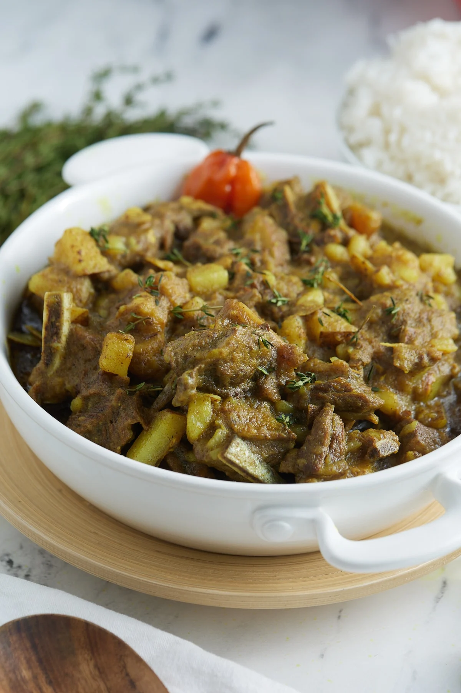

Jamaican Curry Goat Recipe

Description
Curry Goat is a flavorful and aromatic dish that hails from the Caribbean, particularly popular in Jamaican cuisine. Tender pieces of goat meat are slow-cooked in a rich, spiced curry sauce infused with a blend of traditional seasonings such as allspice, thyme, Scotch bonnet peppers, and curry powder. This hearty dish is often served with rice and peas or steamed vegetables, making it a favorite comfort food for many. Its deep, savory flavors and succulent meat make Curry Goat a must-try for those seeking an authentic taste of the Caribbean.
Ingredients
Meat
- 4 lbs Goat meat
- 2 limes, or 1 lemon, or 1/4 cup vinegar
Marinade
- 2 tsp salt
- 1/2 red onion, sliced
- 4 large garlic cloves, minced
- 1 tsp ginger, minced
- 5 green onions, sliced
- 1/2 red bell pepper
- 1/2 green bell pepper
- 2-3 scotch bonnet peppers, sliced
- 3 stalks thyme
- 1 tsp All-spice seasoning
- 1 tsp garlic powder
- 1 tsp onion powder
- 1 tsp ground ginger
- 1 tsp paprika
- 1 tsp black pepper
- 2 Tbsp curry powder
Steps
- To clean goat meat, place meat in a large bowl. Pour lime or lemon juice or vinegar over meat and top with water to ensure meat is almost fully submerged. Using your hands, move the meat around in the liquid (the water may be murky) and then drain. Rinse meat with water once more, and then drain and clean your sink thoroughly.
- In the same large bowl, season goat meat with salt.
- Add all marinade ingredients to bowl, tossing to ensure the goat meat is completely covered. Set aside and let marinate for at least 1 hour in the fridge
- Once goat has marinated, in a large pot, add oil and curry powder and fry for 2 minutes over medium heat, stirring constantly to brown the meat.
- Add marinated goat into pot and cook over medium heat, stirring occasionally. Cover pot with a lid and let simmer for 15-20 minutes. After 20 minutes, goat should be steamed and liquid will have formed in the pot
- Pour 2 cups of water into pot and bring to a simmer, keep pot covered over low heat for at least 2 hours, or until meat is tender. If curry becomes too dry, add water as necessary. If your goat meat is not tender after 2 hours, add more water and simmer until tender.
- Add potato and bell pepper to pot and simmer uncovered on low for 30 minutes or until curry thickens and potatoes are thoroughly cooked.
- Cook until desired thickness is achieved and season with salt to taste.
- Serve with rice and peas, white rice or roti.